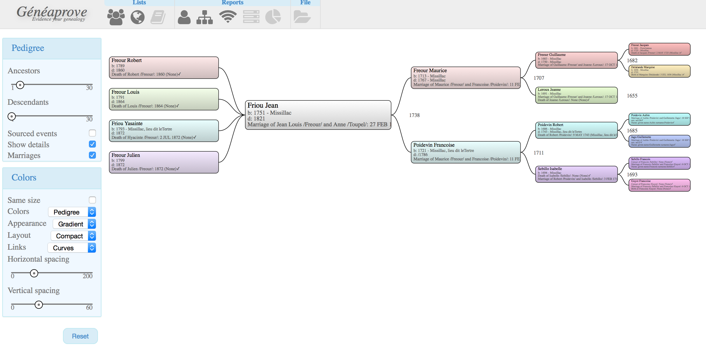
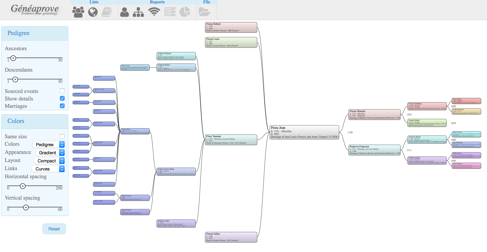

All genealogical software include reports. These are views into your genealogical tree, showing various aspects.
Geneaprove currently only includes a limited number of views. These are
Given a person (often called the decujus), the pedigree shows a tree of all its ancestors up to a number of generations.
Geneaprove lets you configure the number of generations, and is comfortable showing all of them if you want. On my own genealogical tree, I have people up to the 21st generation (not all correctly verified yet!), and I can view the whole tree in my web browser in under a second, including time to download the data.
Geneaprove will also show you the children of the decujus, to ease navigation.
The pedigree view is fully zoomable, and will display more information as you zoom in.
Clicking on any person in the tree will make that person the new decujus, and show his/her own tree.
Double-clicking on a person leads you to the Person view
Since sources as so important in geneaprove, it will add a check mark next to all dates and places for which at least one source is available.
The pedigree, like the fanchart, can be displayed with multiple color schemes:
There are also several layout algorithms:
 In addition, you can configure whether all boxes should occupy the same space, or whether later generations are displayed smaller (thus leading to a better overview of the tree, and you can zoom in to see the details).
 Finally, the pedigree can display both ancestors and descendants, up to as many generations as you want. The web client will only download the information it does not already have, to speed things up.
Instead of displaying the ancestors as a tree, this report will show them in a circle. This is less frequently used, but is a much more compact way to see lots of generations in a single view.
The same highlighting rules apply in the fanchart, although as seen in the screenshots it is also possible to use different color schemes, based for instance on the location of the person in the fanchart. This last colorscheme is less useful to investigate your data, but much nicer to print.
Quilts view have been introduced a few years ago by Aviz Research, and are a great way to see a lot of people interactively. See the original paper. Geneaprove does not provide the full functionality yet.
This page shows the number of persons in your tree (not the total number in the database, which very often is irrelevant because people include information for person whose name seem to match, just in case it is useful later).
For each generation, it is able to display the earliest birth date and latest known death date. These are often useful to detect inconsistencies in the database.
It also shows the various persona that are linked together to represent a real world person, and will allow you to break these links when they are no longer valid.
For each event or characteristic, the surety level of the assertion is displayed as a star ration. These schemes can be customized at will, so you can adapt to whatever your own conventions are.
This view lists all known persons in the database. The table can be sorted on any of the columns, or can be filtered to see a subset of the persons. Clicking on a person will lead you to the Person view.
The long term goal is to make creating such reports easier (at least when dealing with exporting such reports). A good inspiration is LifeLines. Although a text based tool (and which cannot import my Gedcom file :-(), it is known for its good scriptability. One of its drawback is that the scripting language was designed 20 years ago, and is very low-level. Thanks to python, we can have a much more user-friendly language.
Geneaprove will need to include a high-level API (ie hiding the database model), and then we can have reports exporting Books, Trees, List of people,...


{kind=link}
{kind=link}
{kind=link}
{kind=link}
{kind=link}
{kind=link}
{kind=link}
{kind=link}
{kind=link}
{kind=link}
{kind=link}
{kind=link}
{kind=link}
{kind=link}
{kind=link}
{kind=link}
{kind=link}
{kind=link}
{kind=link}